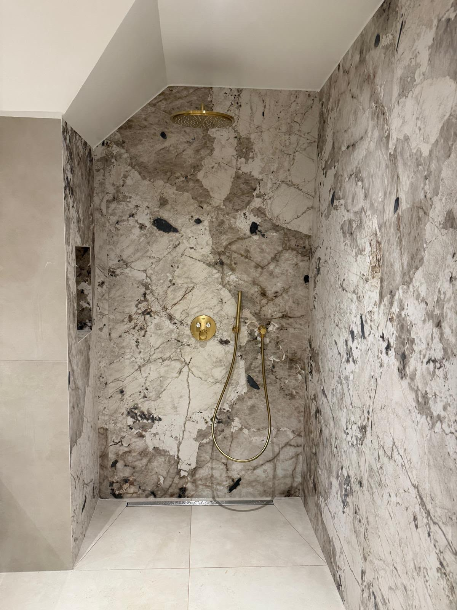
Réalisations
Nos chantiers
Une sélection de réalisations récentes, photographiées telles quelles, sans retouche : nos carrelages et sanitaires posés et vécus au quotidien.
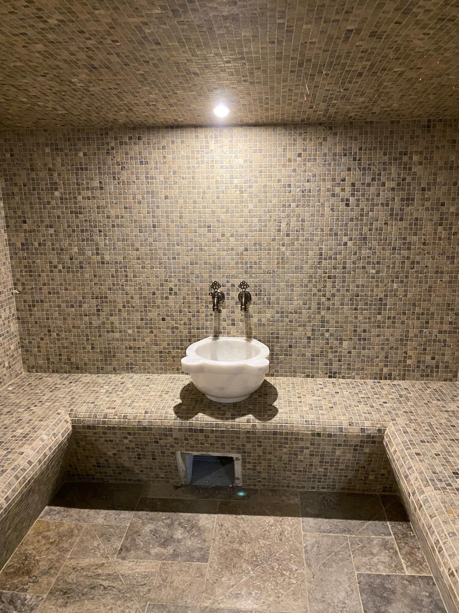
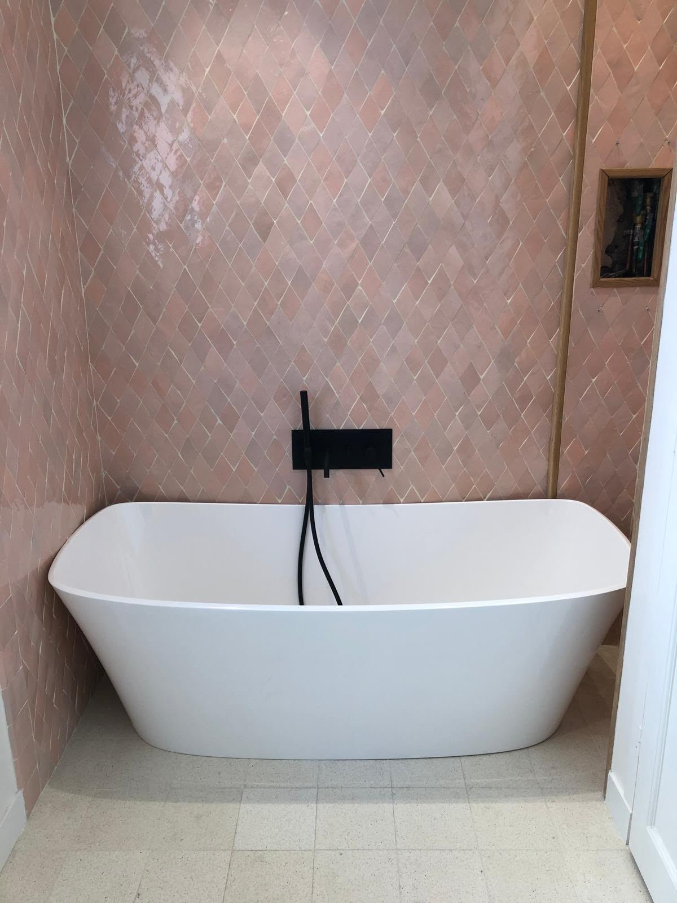
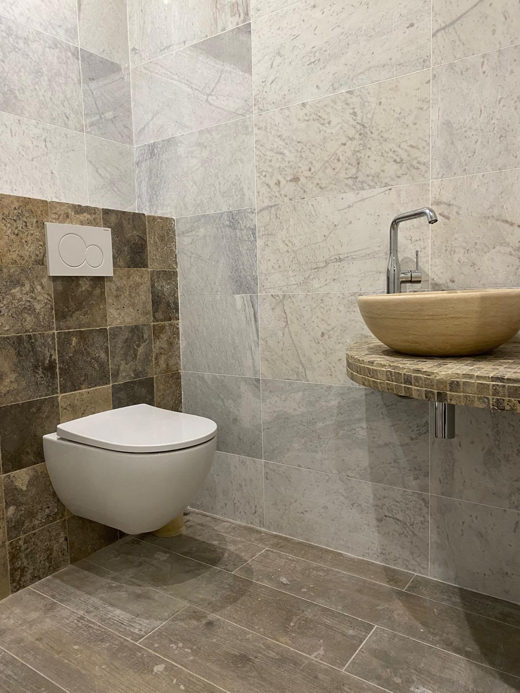
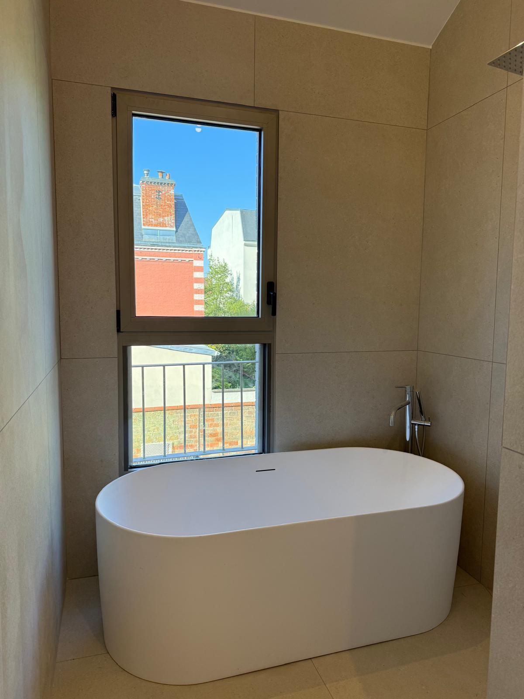
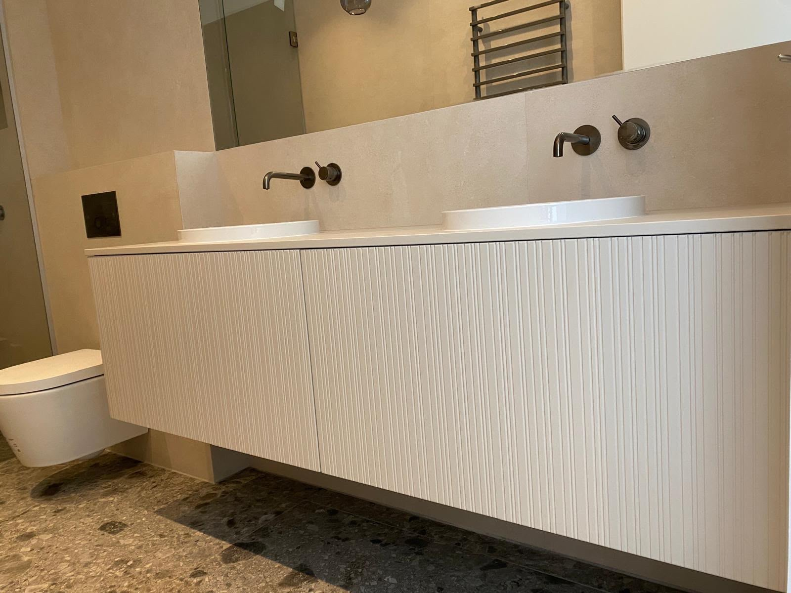
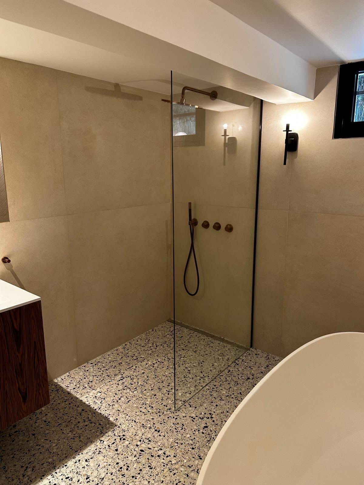
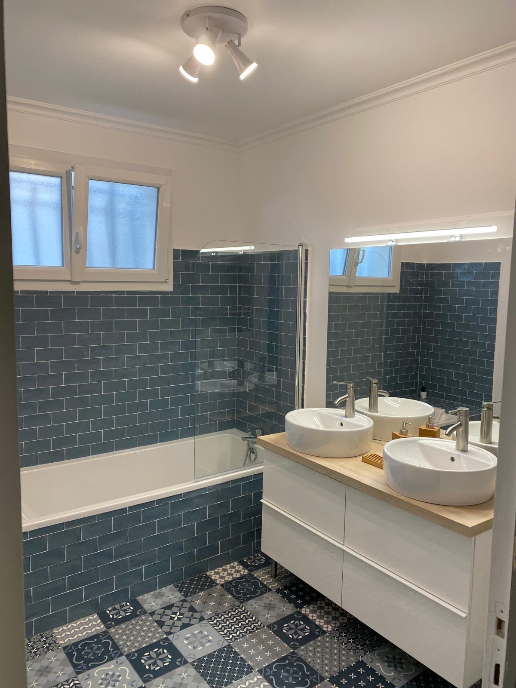
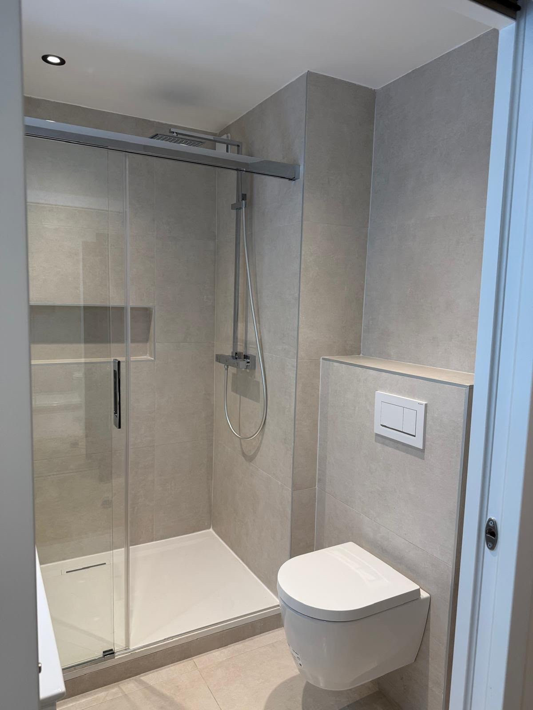
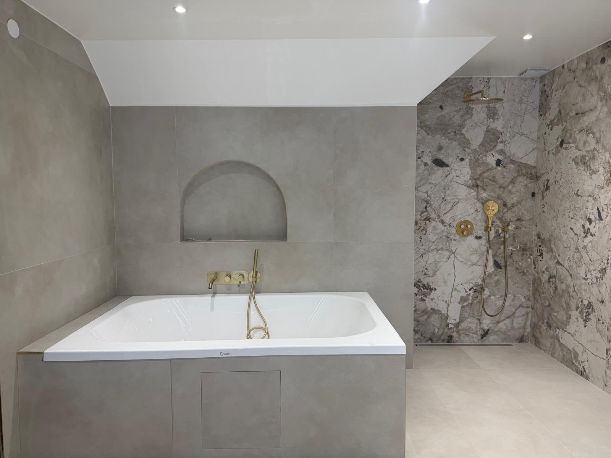
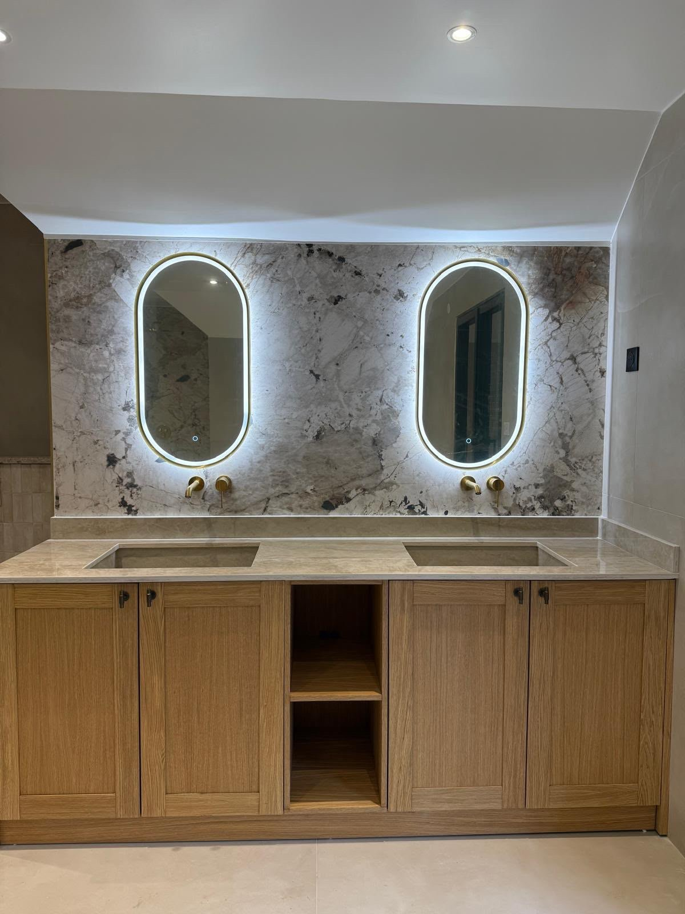
Votre projet
Parlons de votre projet et composons ensemble une sélection de matières et de finitions sur mesure.
Nous contacter